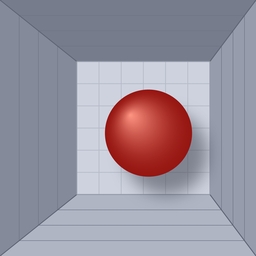

Privacy Policy / プライバシーポリシー
HoloWindow
Privacy Policy
Effective date: October 19, 2026
This policy explains how HoloWindow (the "App"), developed by noprops, handles information. In short: the App does not collect, store, or share any personal data.
Information we collect
None. The App has no accounts, no advertising, no analytics, and no tracking, and it does not connect to the internet.
Camera and face data
When you choose the Face Tracking view, the App uses the front camera through Apple's ARKit to estimate the position of your eyes relative to the screen, so the room is drawn from your point of view. This happens on your device, in real time:
- Camera images and face data are processed only on your device and are used only to draw the view.
- They are never recorded, saved, or sent off the device, and nobody (including the developer) receives them.
- They are not used for advertising, marketing, identification, or data mining, and are not shared with any third party.
You can deny or withdraw camera access at any time in Settings > HoloWindow > Camera. The App then uses the device's tilt instead.
Motion sensors
The App reads the device's motion sensors (gravity and gyroscope) to follow how you tilt it. These readings are processed on the device only and are not stored or sent.
Data stored on your device
The App remembers two settings on your device: the parallax strength and the chosen view (Face Tracking or Gravity). They never leave the device and are removed when you delete the App.
Children
The App collects no personal data from anyone, including children.
Changes to this policy
If this policy changes, the new version will be posted on this page with a new effective date.
Contact
Questions about this policy: mail@mygames888.info
プライバシーポリシー
施行日：2026年10月19日
本ポリシーは、noprops が開発するアプリ「HoloWindow」（以下「本アプリ」）における情報の取り扱いについて説明するものです。要点：本アプリは個人データを一切収集・保存・共有しません。
収集する情報
ありません。本アプリにはアカウント、広告、アクセス解析、トラッキングの機能はなく、インターネットにも接続しません。
カメラと顔のデータ
「Face Tracking」の表示方式を選ぶと、本アプリは Apple の ARKit を通じてインカメラを使い、画面に対する目の位置を推定して、その視点から部屋を描画します。この処理はすべて端末内でリアルタイムに行われます。
- カメラの映像と顔のデータは端末内でのみ処理され、画面の描画以外には使われません。
- 記録・保存・端末外への送信は一切行わず、開発者を含め誰も受け取りません。
- 広告、マーケティング、個人の識別、データマイニングには使用せず、第三者にも提供しません。
カメラへのアクセスは「設定」>「HoloWindow」>「カメラ」からいつでも拒否・取り消しできます。その場合、本アプリは端末の傾きを使って表示します。
モーションセンサー
端末の傾きに合わせて表示を動かすため、モーションセンサー（重力・ジャイロ）の値を読み取ります。これらは端末内でのみ処理され、保存も送信もされません。
端末内に保存されるデータ
本アプリは、視差の強さと表示方式（Face Tracking / Gravity）の2つの設定を端末内に保存します。これらが端末外に出ることはなく、本アプリを削除すると消去されます。
お子様について
本アプリは、お子様を含むどなたからも個人データを収集しません。
本ポリシーの変更
本ポリシーを変更する場合は、新しい施行日とともにこのページに掲載します。
お問い合わせ
本ポリシーに関するお問い合わせ：mail@mygames888.info